tau2-loops06 · the Agent tab, builtbuilt and checked · 2026-09-26
Result · follows s05_agent-tab-graph.html · branch challenger-20260925 · uncommitted
The Agent tab now draws one real conversation, and any tool call can be re-run against its database
Pick a version, a run and a conversation. The graph fills in from that trace, every node opens what it received and produced,
and every tool carries a playground that rebuilds τ²'s environment at the chosen message and runs one call in it.
All four of your s05 answers are built as chosen. Everything below was run against the built app, not the mock-up.
1 · Walkthrough — task 22 explained in five clicks
Each step is a screenshot of the real tab, served by tau2loop serve from the built frontend, at 1280 px in light mode unless it says otherwise.
Open the tab: it lands on a failure, never on an empty graph
With nothing remembered, /agent opens the airline champion (v0, its registry run, 12/20 passed) at its first failed conversation, airline/24, with the agent node open. The address is completed in place, so it can be shared as-is.
The headline is the conversation's outcome, read from its reward basis.frontend/src/pages/Agent.tsx · defaultRun(), ordered()
Pick v2's task 22: the graph says where it went wrong before you read a message
Agent airline/v2, run airline_v2_train · 16/20 passed, conversation airline/22 t1 · ✕ fail. The headline reads "0 of 3 expected actions made, and the database did not match gold". Three write tools are drawn dashed amber, 0/1 each: the task expected them and the agent never called them. get_reservation_details ×4 shows the four lookups it made instead.
fig 2 · airline/v2 · airline/22 t1 · node agent
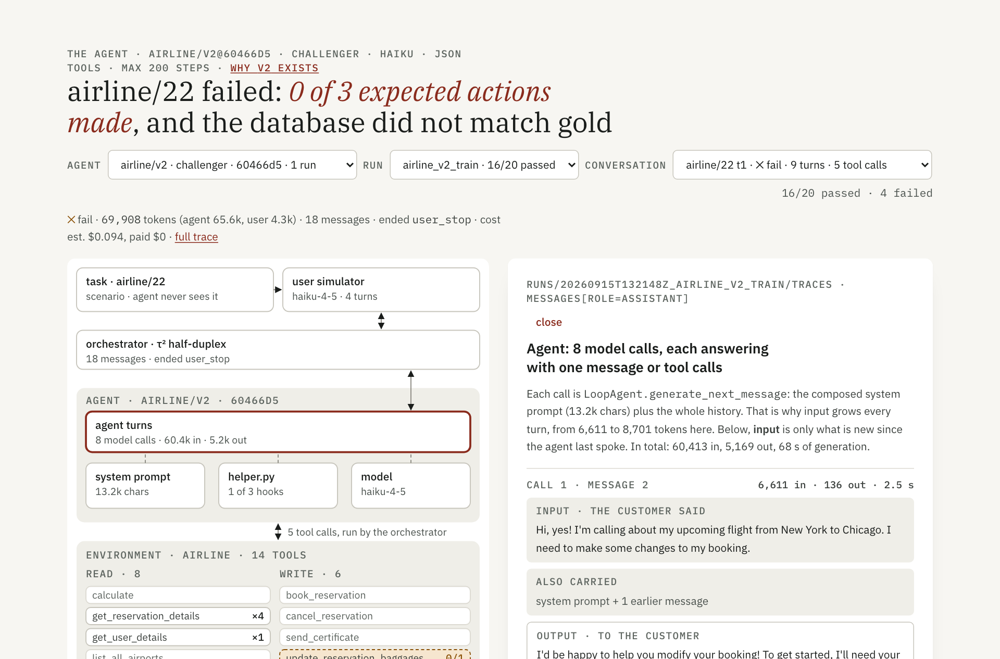
8 model calls, 60.4k tokens in and 5.2k out; each step shows only what is new since the agent last spoke.GET /api/runs/{run}/22/t1 · messages[], task, tools[].type
Click the dashed tool: the expected call, never made, with a button to make it
The panel for update_reservation_flights shows the task's expected call 22_0 in amber, "✕ never made", and ▶ run it. Below it sits the playground, prefilled with those arguments at message 18, after the conversation.
fig 3 · node tool:update_reservation_flights
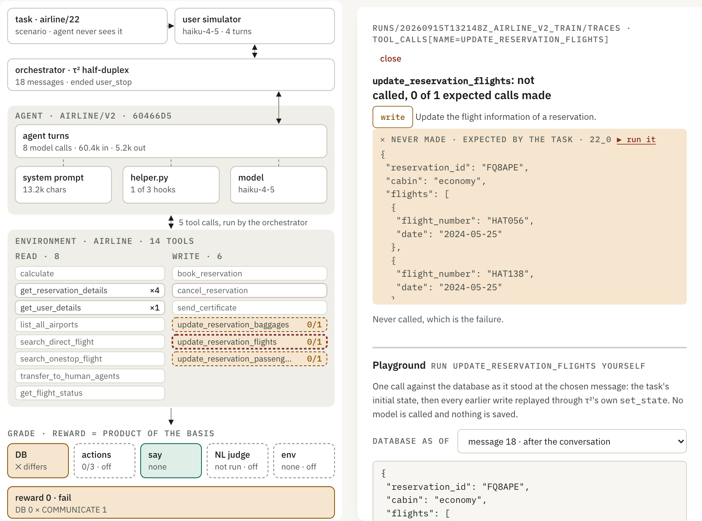
The node key is in the address: ?node=tool:update_reservation_flights.
Run it: τ² accepts the call the agent refused
τ²'s own tool code, in an environment rebuilt in memory, changes 2 records. It moves reservations.FQ8APE from basic_economy to economy, reprices both legs from $71 + $60 to $155 + $185, and takes $209 from the gift card ($280 → $71). The agent had told the customer basic economy could not be changed, but the policy allows a cabin change on any reservation.
The diff comes first because it says more than the record the tool returns. Nothing is saved.
fig 4 · playground result, the task's 22_0
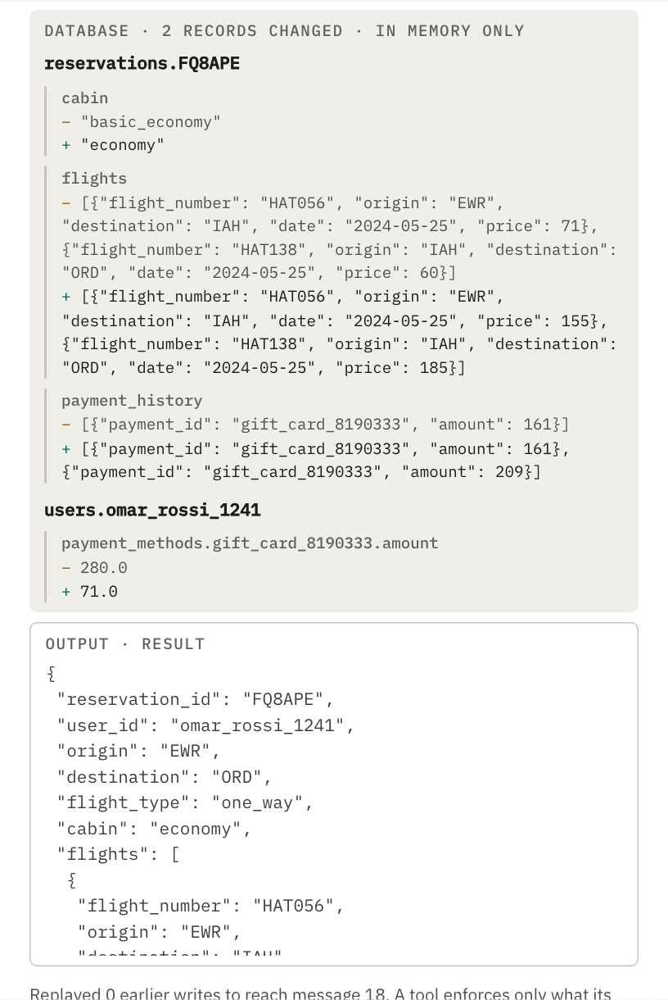
A field-level diff of τ²'s database before and after the one call.POST /api/runs/{run}/22/t1/tool · eval/replay.py · run_tool(), diff()
Edit it: business cabin fails on the gift card, and nothing changes
Change "cabin" to "business" and run again: Error: Gift card balance is not enough, and the database is unchanged. Invalid JSON is caught before anything is sent.
The caveat under every result is deliberate. A tool enforces only what its own code checks, never the policy, so "accepted" does not mean "allowed".
fig 5 · an edit τ² refuses
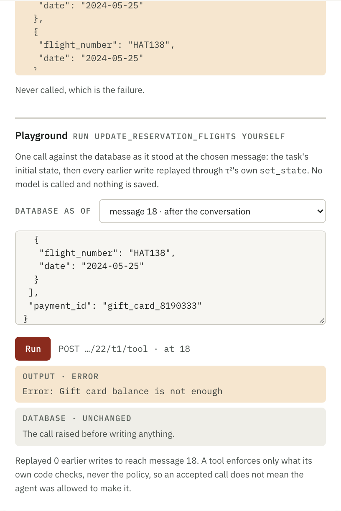
Every edit is a live call in a checkout; the precomputed results of the s05 mock-up are gone.
Click a replay row: its node opens at that step, and its rows are marked
Row 12, get_reservation_details(FQ8APE), selects that tool's node and step. The node's other calls (8, 10, 14) are tinted, and row 12 is highlighted. The panel scrolls to call 3 of 4. From there, ▶ edit and re-run gives the same result as recorded, marked ✓.
?node=tool:get_reservation_details&step=12
fig 6 · replay, row 12 selected
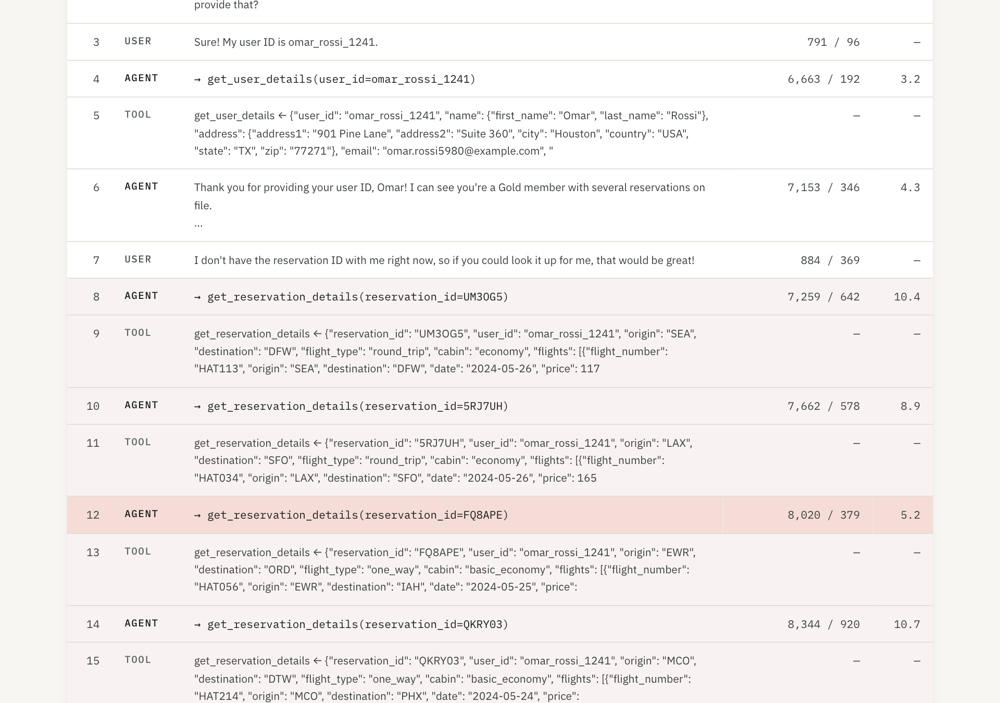
Traces past 60 rows show the rest on demand; the longest committed trace has 140 messages.
The old figure lives in the model node, and its old addresses still land
?node=provider (a box in the old subscription-adapter figure) now opens model. The same goes for generate, sdk, prompting and runs. judge opens the NL-judge check, and factory the agent. The panel carries the call chain and the three facts from the old cards: one CLI process per call, sampling with no temperature, and billing that cannot surprise.
fig 7 · ?node=provider → node model
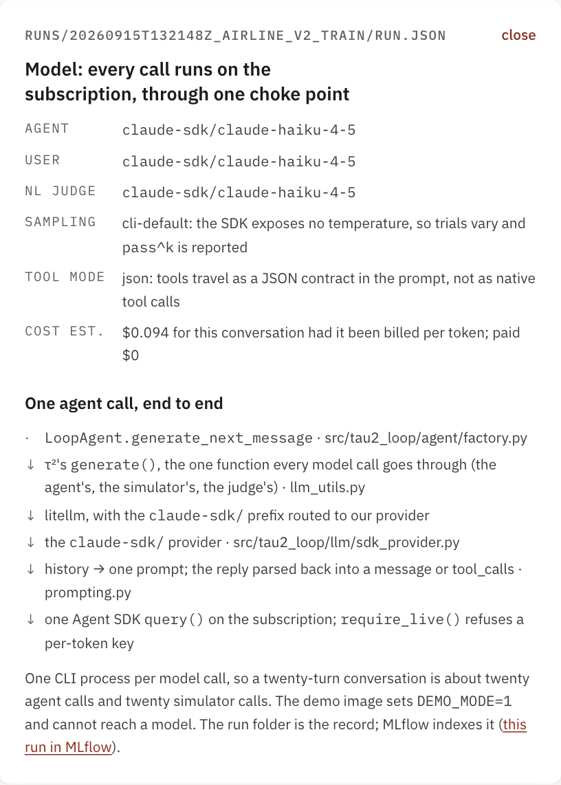
$0.094 per-token estimate for this conversation; paid $0 on the subscription.lib/agentgraph.tsx · LEGACY_NODES
The prompt is the one the agent was sent: 13,198 characters, three parts
system.md (5,235 chars) with the policy (1,313 words, as the trace recorded it) in its {policy} slot, then extra_context()'s 293 chars. It is composed by agent/compose.py, which LoopAgent.system_prompt() now also calls. A test asserts the two are equal, character for character.
fig 8 · node prompt, from the run's own snapshot
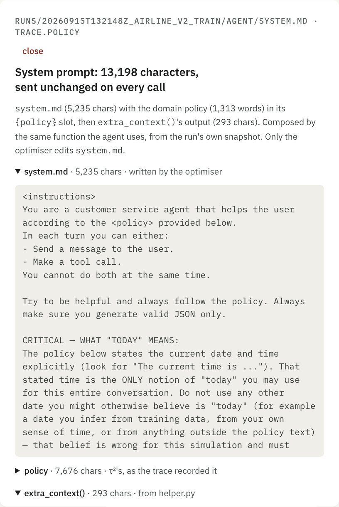
Read from runs/<id>/agent/, never agents/: the run folder is the record.GET /api/runs/{run}/agent
Telecom: the customer's phone is part of the graph, and its tools re-run too
τ² keeps the customer's tools on the environment beside the agent's (env.user_tools), so the graph draws them there. It shows only the ones used or expected: 17 of 30 in this conversation, 8 of them expected by the task and all 8 matched. Re-running toggle_airplane_mode at message 19 replays 1 earlier write and flips user.device.airplane_mode from true to false, the same as recorded.
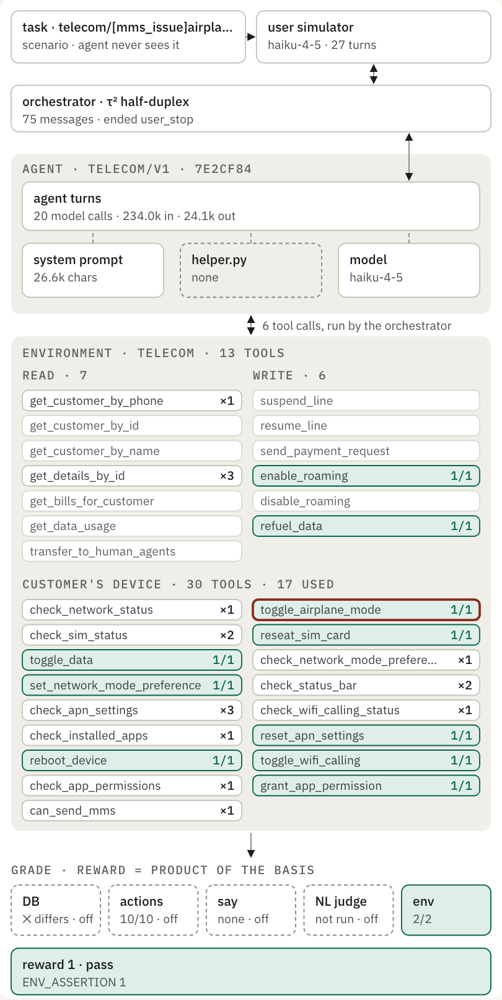
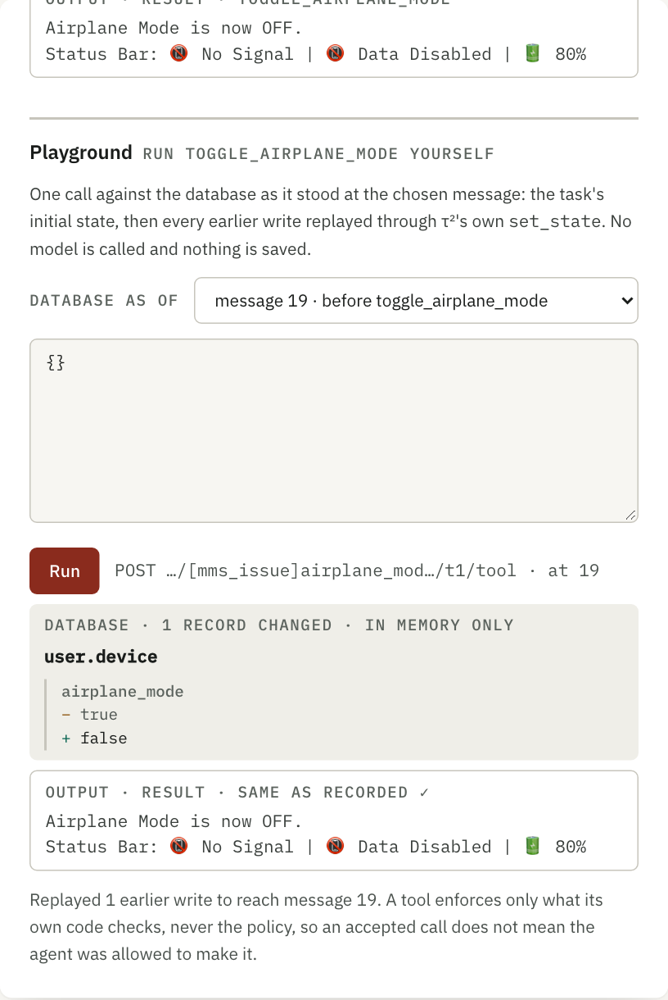
Telecom's task ids (this one is 214 characters) are shortened in the headline and the graph; the full id stays in the picker.runs/20260915T174430Z_telecom_v1_train · requestor: user
In the demo image the playground says why it cannot run
The image ships no τ² by design. There /healthz reports playground: false, the route answers 503, and the form is disabled with the reason and the command that enables it. The graph, panels and replay all still work there: they read committed files only.
fig 9 · playground with playground: false
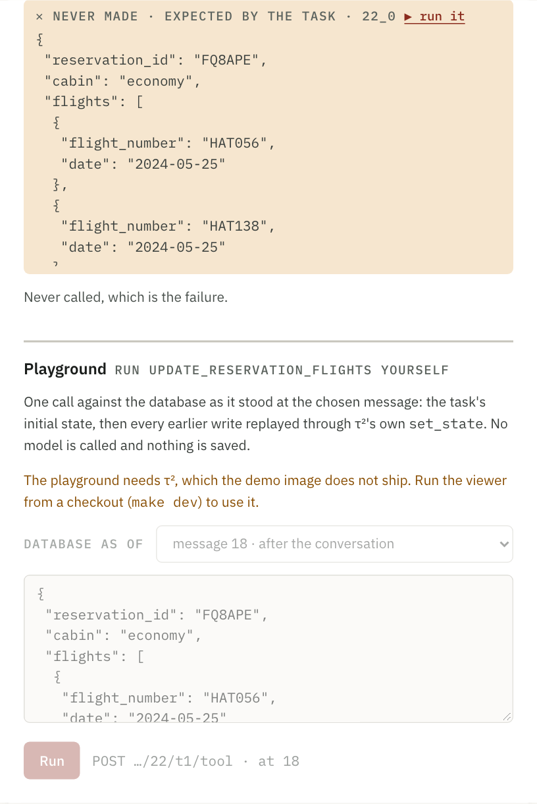
Captured by answering /healthz with playground: false; the 503 itself is covered by a test.
Phone width and dark mode hold
At 390 px the filters stack full width, and the graph keeps its 540 px drawing in its own scroll box, so no label renders under 13 px. The panel follows below. Dark mode redefines colour only; a failed DB check stays amber with a ✕.
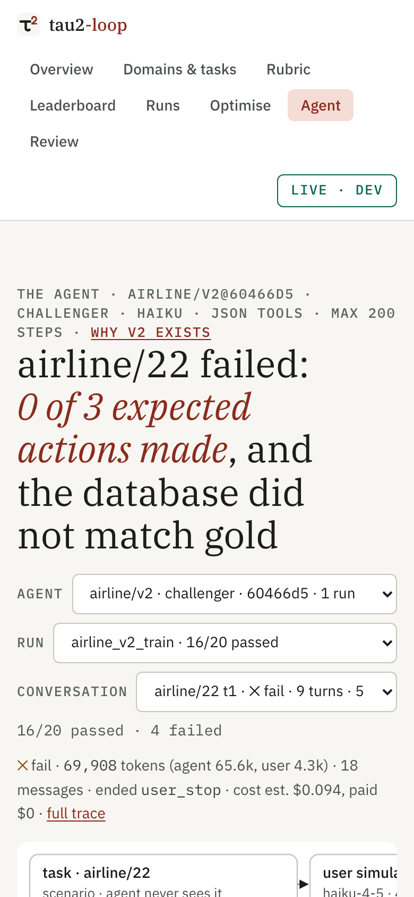
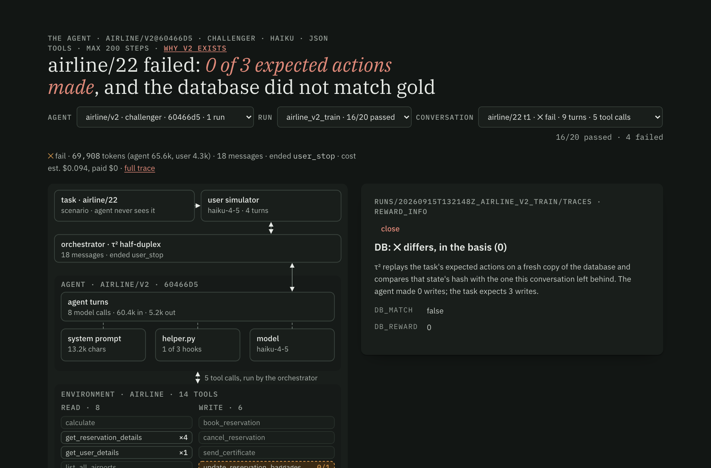
Task 22 is now a three-click answer, graph, tool, run it: the call the agent refused was valid, and τ² would have charged $209.
2 · Built — three routes, one module, one rewritten page
21 files, 5 of them new. Line counts are from git diff --numstat against HEAD; the four marked † also carry the tokens-per-conversation column from earlier in this session, which is uncommitted too.
file
what changed
lines
serving/app.py †
The trial route keeps every message whole (ids, requestor, usage, timing) and adds the task spec and typed tools. New GET /api/runs/{run}/agent and POST /api/runs/{run}/{task}/{trial}/tool. /healthz reports playground.src/tau2_loop/serving/app.py
+202 −17
eval/replay.py
New. Rebuilds τ²'s environment at message N via set_state, as the evaluator does; runs one call; diffs the database by field. Bounds: domain tool names only, 8 KB of arguments, one call; a message between a call and its result is refused.src/tau2_loop/eval/replay.py
265 new
agent/compose.py
New and τ²-free. The one prompt composition (policy in its slot, then extra_context()), shared by the agent and the API.src/tau2_loop/agent/compose.py
83 new
agent/factory.py
LoopAgent.system_prompt() calls compose(); the helper loader moved there.src/tau2_loop/agent/factory.py
+7 −38
eval/rescore.py
Takes its environment settings from replay.env_kwargs_for(), so the gate and the playground build the same environment.src/tau2_loop/eval/rescore.py
+3 −8
data/splits.py · data/tasks/*.json
The extract records each tool's τ² type and whether it mutates state, plus the customer's own tools (telecom 30, banking 6). Regenerated from the committed splits; every other byte is unchanged.src/tau2_loop/data/splits.py · data/tasks/{airline,retail,telecom,banking_knowledge}.json
+16 −5 · +396 −58
lib/agentgraph.tsx
New. The graph, the per-node panels, the playground and the replay, plus the pure functions that read a trace (steps, call pairing, checks, outcome).frontend/src/lib/agentgraph.tsx
1,251 new
pages/Agent.tsx
Rewritten: the filter bar, landing and completion rules, the lens, and the sessionStorage view.frontend/src/pages/Agent.tsx
+234 −424
api.ts † · styles.css
Types for the three routes; the tab's styles, tokens only.frontend/src/lib/api.ts · frontend/src/styles.css
The tab's row and its three routes; the image's comment says the playground answers 503 there.
+14 −2
† also carries the Runs tab's tokens-per-conversation column (request 1 of this session), including pages/Runs.tsx, +8 −1.
3 · Your answers — all four built as chosen
Q1 · landing · A
Last view, else a champion's first failure
sessionStorage keeps the last complete address; /agent reopens it. With none, it opens the first domain with a champion at its registry run's first failure. Tested live: after visiting row 12, /agent returned to exactly that address, &step=12 included.
Q2 · plumbing · A
Folded into the model node
The six-step chain and the three cards' facts are in the model panel (fig 7). The eight old ?node= keys map to the new nodes, and a unit test covers every one of the eight.
Q3 · playground · A, now
Built with the graph
Live in any checkout, on every tool: agent-side and customer-side, recorded or expected calls, any edit. It is off in the demo image (see section 5), which the tab states.
Q4 · versions table · A
The agent select replaced it
Every version of every domain, grouped by domain, with its role, fingerprint and run count. "Why v2 exists" is a link to its Optimise round, in the line above the headline. The verbatim file dump is gone; the files are inside the prompt and helper nodes.
4 · Checks — 86 of 86 tests, every width clean
check
result
how
Python tests
86 of 86 passed, 11 of them new, in 8.9 s
uv run pytest
Frontend tests
67 of 67 passed, 13 of them new
npx vitest run
CI gate
GATE OK: every champion still re-scores offline to its registry reward, now through the shared environment settings
make gate
Lint
clean: ruff, mypy strict over 35 files, and the design lint (no hex outside tokens, no text under 12.8 px)
make lint
Replay fidelity
20 of 20 conversations in airline_v2_train rebuild with strict=True, and every recorded write re-runs to its recorded result
test_playground.py
Writes nothing
unchanged: τ²'s airline db.json and every file in the run folder hash the same after a playground write
test_playground.py
Call pairing
1,922 of 1,922 tool calls in 226 committed traces (13 runs) pair with exactly one result by id
test_api.py
Prompt shown = sent
equal: LoopAgent.system_prompt() and the route agree on all 13,198 characters for v2
test_api.py
Layout
24 of 24 views clean: 4 domains × 390, 900 and 1280 px × light and dark, with the playground run on each tool view. 0 px page or panel overflow, smallest text 12.8 px (SVG 13 px), 0 clipped or overlapping labels, 0 console errors
Playwright on :8097
Other tabs
7 of 7 other tabs and 2 old addresses (/agents/airline/v2, /architecture) load with 0 errors
Playwright
Playground latency
2.3 s for the first call in a process (it imports τ²), then 0.19 s for an airline write; 0.006 s for a telecom read at message 0
curl · Playwright
The playground is only as good as the replay, so the replay is what the tests pin, strictly, on a whole committed run.
5 · Changed from s05 — the demo image cannot run the playground
s05 said the playground "stays on in the demo image". It cannot. The image deliberately ships no τ², litellm or SDK (the Dockerfile says so), and rebuilding τ²'s environment needs τ². Adding τ² would undo that design, so the route answers 503 there and the tab says why (fig 9). The graph, the panels and the replay are unaffected.
Tool types come from the committed extract, not from τ² at request time. The same reason: data/tasks/<domain>.json now records τ²'s own tool_type, so the demo image draws the read/write split too.
The customer's tools sit inside the environment group. The first telecom audit found 12 clipped and 16 overlapping labels in a narrow group under the simulator. τ² keeps these tools on the environment anyway, so they moved there at full column width, showing the used and expected ones only.
The playground calls τ² live; nothing is precomputed. The s05 mock-up carried 358 precomputed results; the built tab runs any edit through POST …/tool.
One composition, two callers. s05 planned to show the composed prompt. The build moved the composition itself into compose.py, so the tab cannot drift from what the agent is sent.
v2 opens on airline/24, not airline/22. "First failure" follows the run's task order, and 24 comes first. Task 22 is one pick away, and fig 2 onward uses it.
6 · Next — restart your dev server, then decide commits
Your make dev on :8081 started before these changes, so the Vite tab on :5174 is still asking the old API, which has no new routes. Restart it to see the new tab there. I served a separate copy on :8097 for these checks, and it is still running.
make dev # restart: the API on :8081
cd frontend && npm run dev # the UI on :5174 → /agent
Nothing is committed yet: 21 code, data and doc files on challenger-20260925, plus the s05 and s06 pages and this page's 13 screenshots.